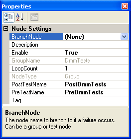

The group node properties apply specifically to group nodes. Each node has its own unique set of properties. To view a group node's properties in the Properties Page, click on the node in the Test Sequence View. If the Properties Page is not visible, right-click anywhere in the Test Sequence View and click "Node Properties" or select "Properties Page" from the View menu. The following shows an example of the properties for a group node:

Click on the following links for a detailed description of each property.
| BranchOnFailNode | Description | Enable | GroupName | LoopCount |
| NodeType | PostTestName | PreTestName | Tag |
The node to branch to if this group fails. A group will fail if any of the tests within the group fail. The default value is "None". To change this property, select a node from the drop-down list. As shown in the example below, all group and test nodes in the test program are listed as available branch nodes.
Note: Care should be taken when selecting a branch node to avoid an infinite loop during test execution. For example, using the above illustration, if FSODemo's branch node is set to ExcelDemo and if FSODemo fails every time, then there will be an infinite loop between ExcelDemo and FSODemo.
An optional, brief description of the group node. If a description was entered while adding a new group node, it will appear here. To change this property, simply delete the current description and type in a new description.
If true, the node is enabled. If false, the node is disabled. When a node is disabled, it is not executed when the test program is run and appears grayed out in the Test Sequence View. If the test node belongs to a group node that is disabled, the test node will not be executed regardless of whether or not the test is enabled.
The name of the group node. This property is read-only
The number of times the group node will loop. The default is 1 loop. The node, including all enabled child nodes, will be executed the number of times specified by this property before moving on to the next node in the test sequence. If a test node in this group fails and the branch node for that node is not within this group node, the looping will terminate and the branch node will be executed.
The type of node selected, either "Root", "Group", or "Test". This property is read-only.
The name of the VBScript method that will be executed after all nodes in this group are executed. To change this property, delete the current method name and type in the new method name. It is the user's responsibility to ensure that this property contains the name of an existing method in the test script. If the script engine is unable to find the specified method, an "Unknown name" error will be generated.
The name of the VBScript method that will be executed before any nodes in this group are executed. To change this property, delete the current method name and type in the new method name. It is the user's responsibility to ensure that this property contains the name of an existing method in the test script. If the script engine is unable to find the specified method, an "Unknown name" error will be generated.
Any user defined data associated with the test node.
See Also
Properties Page | Test Program Properties | Test Node Properties
Astronics Test Systems
Last updated on 11/17/14 by M.Buccat